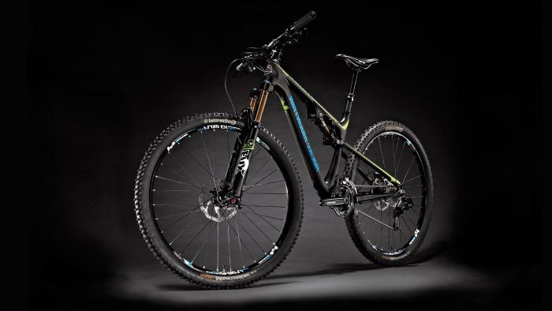
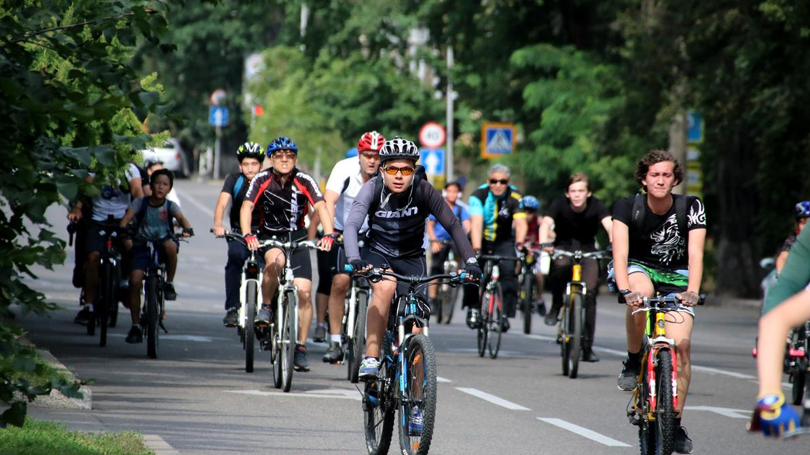
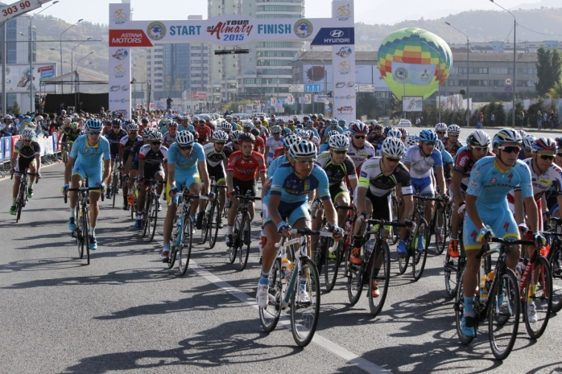
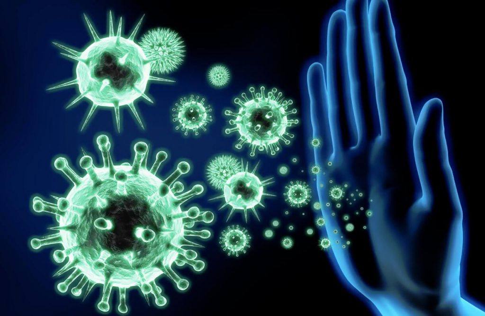
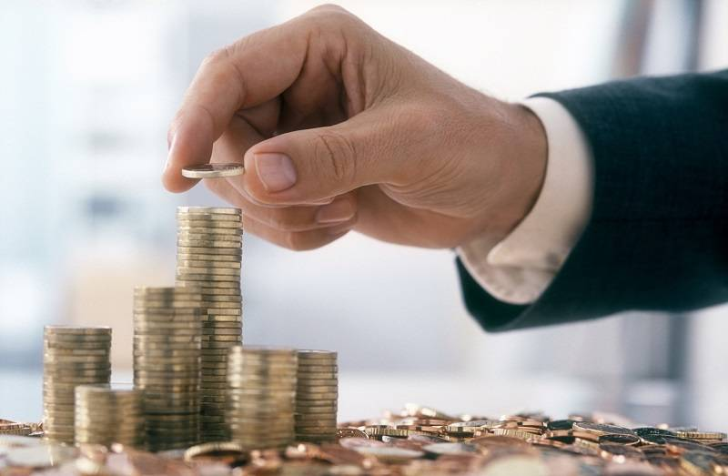
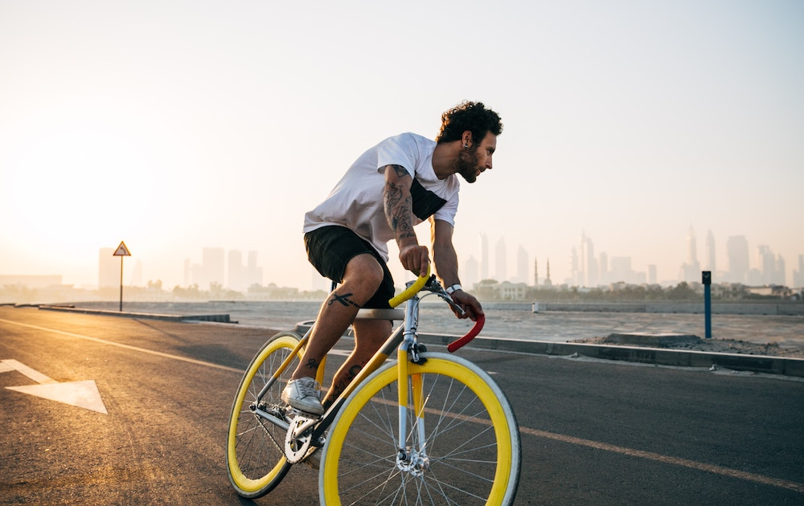
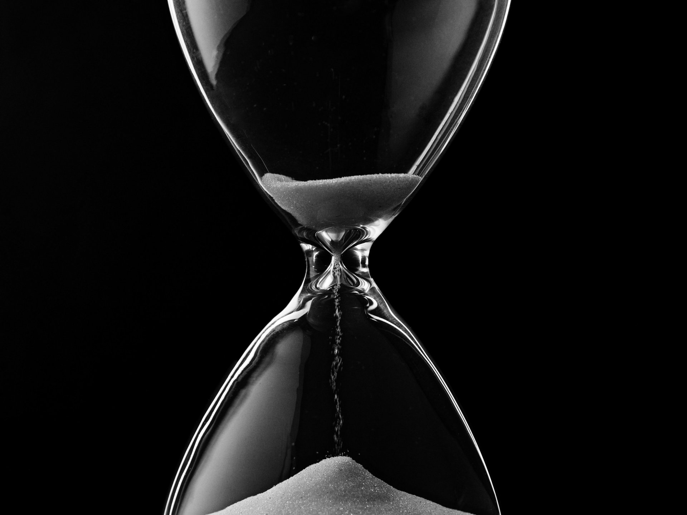

Мое хобби -
велоспорт
Уже на протяжении многих лет, в течении каждого года я катаюсь на велосипеде и увлекаюсь велоспортом. Большинство моего окружения также предпочитает велосипед, поэтому мы часто собираемся вместе и едем в какое-либо место. Мы объехали вместе большиство точек в городе, например Медеу и т.п., а также участвовали на марафонах.

Веломарафоны
В Алматы каждый год проходят веломарафоны, как для профессионалов, так и для любителей. На двух марафонов я участвовал вместе с друзьями и мы доходили до конца. Это было не легко и к тому же желающих действительно много, поэтому придти первым к финишу - это очень сложная задача. Такие веломарафоны хорошо развивают выносливость, соревновательный дух и конечно же ты можешь познакомиться с многими интересными людьми.


Польза езды на велосипеде
Укрепляет иммунитет

Тот, кто регулярно проводит свое свободное время за ездой на велосипеде, существенно повышает иммунитет организма и вследствие реже болеет и подвиргается вирусам.
Экономит ваш бюджет

Цены на велосипеды довольно невысокие, да и их обслуживание не предполагает серьезных затрат. К тому же, вам не нужно будет тратиться на бензин, оплачивать налог и страховку.
Улучшает выносливость

Благодаря регулярным поездкам на велосипеде вы повысите общую выносливость организма. Уже через несколько месяцев вы начнете чувствовать себя бодрее, станете легче переносить нагрузки.
Экономит время

На велосипеде можно добраться в любое место гораздо быстрее, чем пешком. К тому же, велосипедисту не нужно стоять в пробках или ждать общественный транспорт.